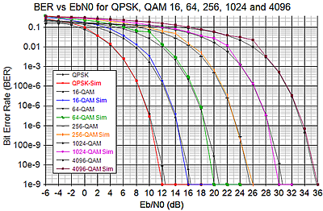

E
b
/N
0
终极指南
你好啊！
搞通信的吧？
行业不景气，
换个行业
吧。
不，我要做通信民工！
别说我没拦着你!
先看点基本的
S/N，C/N
信噪比（S/N）
传输信号平均功率
-------------------------
加性噪声平均功率
载噪比（C/N）
已调制的传输信号平均功率
----------------------------------
加性噪声平均功率
两者的区别
C/N中的已调信号的平均功率 = 传输信号的平均功率 + 调制载波的功率
与传输信号的平均功率相比，载波功率通常很小。
所以，C/N与S/N在数值上十分接近。
回到E
b
/N
0
E
b
/N
0
数字通信系统的信噪比指标。
接收端测量得到。
表示信号强度。
木有搜到高清无码图，凑合看吧。

不同的调制方式，曲线（BER vs E
b
/N
0
）不同。
E
b
/N
0
比特能量
--------------------
噪声功率谱密度
E
b
: 单位是J，接收端的平均比特能量。
N
0
: 单位是W/Hz（J），接收端的平均功率谱密度。
E
b
/N
0
vs C/N
C/N = E
b
/N
0
* (f
b
/B
w
)
f
b
: 信道数据速率。
B
w
: 信道带宽。
是不是对E
b
/N
0
的概念清晰了？
那就到这儿吧，再深入我也不懂。
我准备改行去搬砖了。
想要深入了解E
b
/N
0
的话，请移步：
wikipedia: E
b
/N
0
E
b
/N
0
Explained
或许你想完善这份极不终极的指南：
fork me